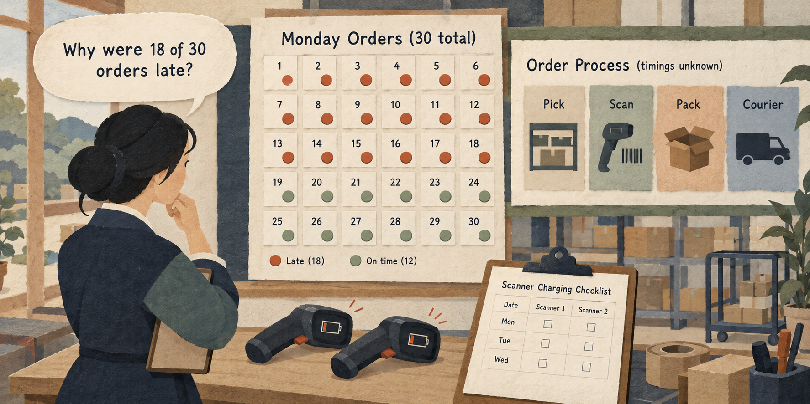

Situation
The problem
A small warehouse shipped 18 of 30 orders late on Monday. Staff report that two barcode scanners ran out of battery, but the manager does not yet know whether this explains every delay.

3 hours: 50-minute lesson, 10-minute break, 50-minute guided practice, 10-minute break, 50-minute applied practice, and 10-minute wrap-up.
A small warehouse shipped 18 of 30 orders late on Monday. Staff report that two barcode scanners ran out of battery, but the manager does not yet know whether this explains every delay.
Map a simple process, distinguish evidence from assumptions, and propose a small test of a likely process cause.
Practice material: Use the practice material supplied in the session Markdown.
Do not replace missing information with guesses.
A small warehouse shipped 18 of 30 orders late on Monday. Staff report that two barcode scanners ran out of battery, but the manager does not yet know whether this explains every delay.
Work through the explanation before comparing prompts or starting the exercise.
Work through the explanation before comparing prompts or starting the exercise.
These examples come from the current session scenario.
Who caused all these late orders?
Do five whys and tell me the root cause.
Keep the source, task, constraints, and output check visible.
Use only the facts below. List what is observed, what is unknown, and up to three possible causes of late orders. Mark each cause as a hypothesis; do not assign blame.
For the hypothesis that uncharged scanners slowed picking, propose a one-week test. Specify the daily measure, comparison, and a result that would weaken this hypothesis. Do not assume it explains all 18 late orders.
Use the complete case and instructions from the session Markdown.
Use the complete case and instructions from the session Markdown.
Check the output before sharing or acting on it.